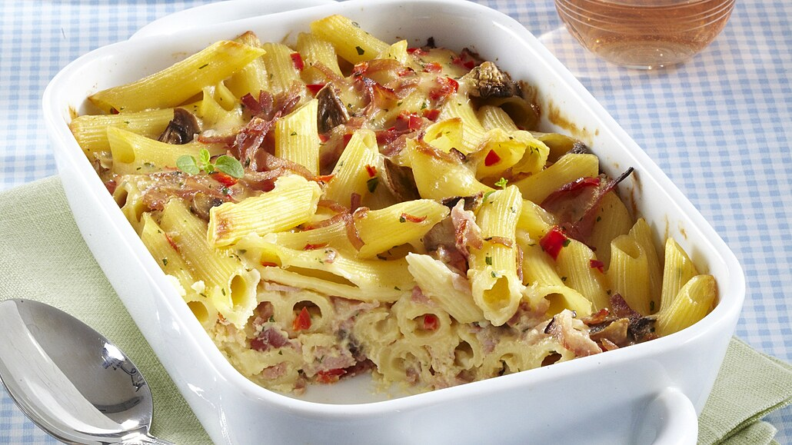

Jednoduché a oblíbené zapečené těstoviny s krémovou smetanovo-vaječnou směsí, šunkou a sýrem.
Těstoviny uvaříme v osolené vodě podle návodu na obalu. Mezitím nakrájíme šunku na kostičky a sýr nahrubo nastrouháme.
Ve smetaně rozšleháme vejce, směs lehce osolíme. Zapékací misku vymažeme máslem.
Uvařené těstoviny promícháme s nakrájenou šunkou a sýrem, vložíme do zapékací misky a zakryjeme víkem nebo alobalem.
Dáme péct do trouby předehřáté na 200 °C na 15–20 minut. Poté zalijeme smetanovo-vaječnou směsí a dopečeme odkryté dozlatova.
Podáváme samotné nebo s čerstvou zeleninou.